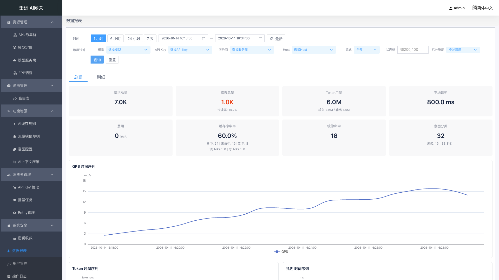
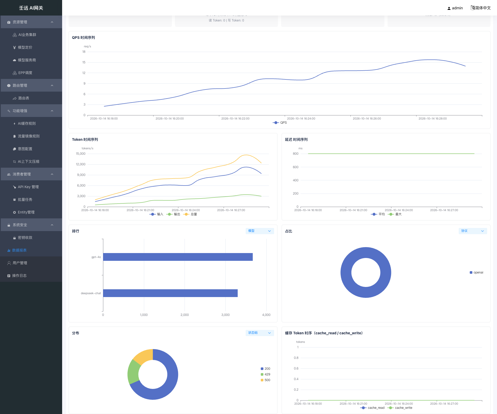
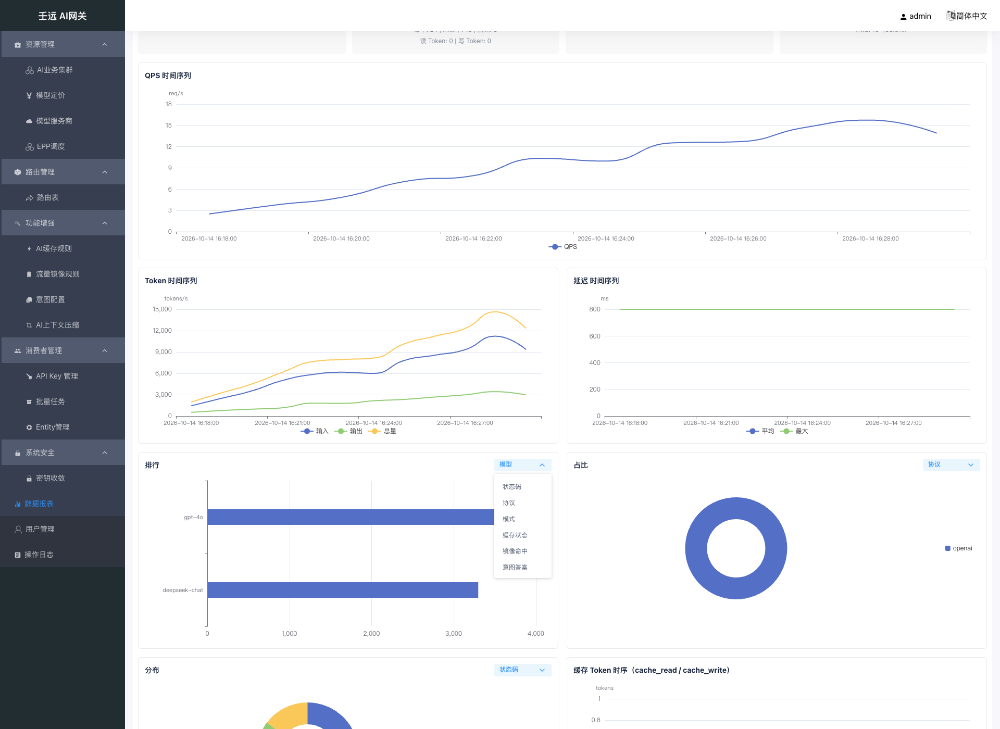
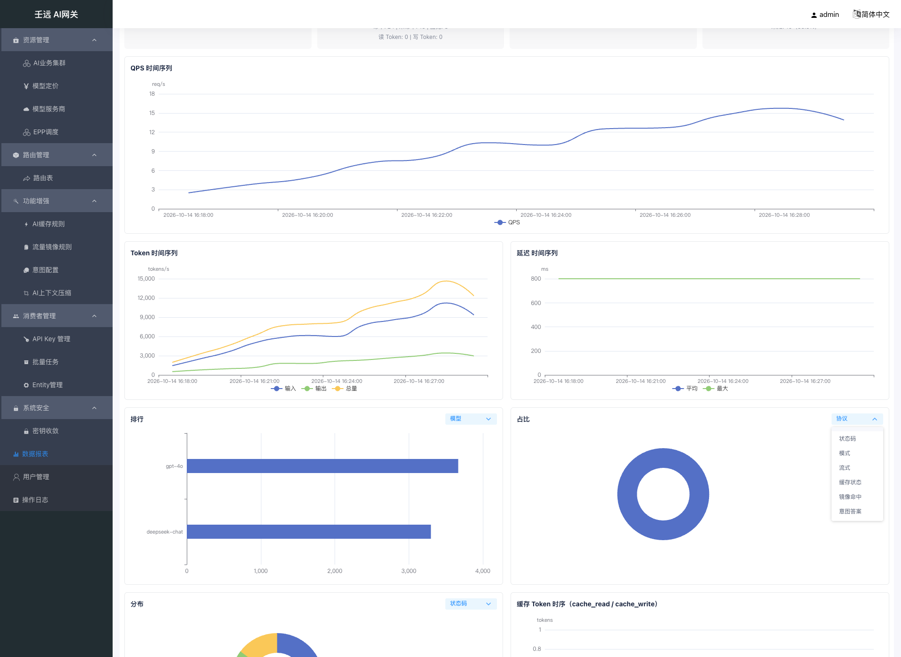
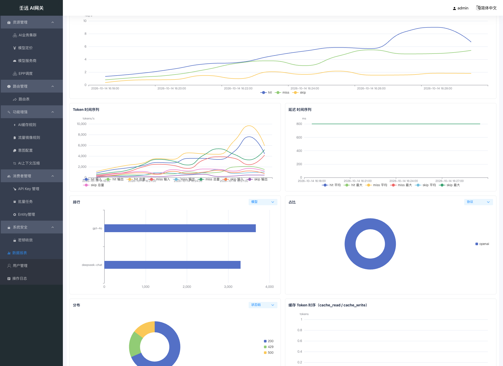
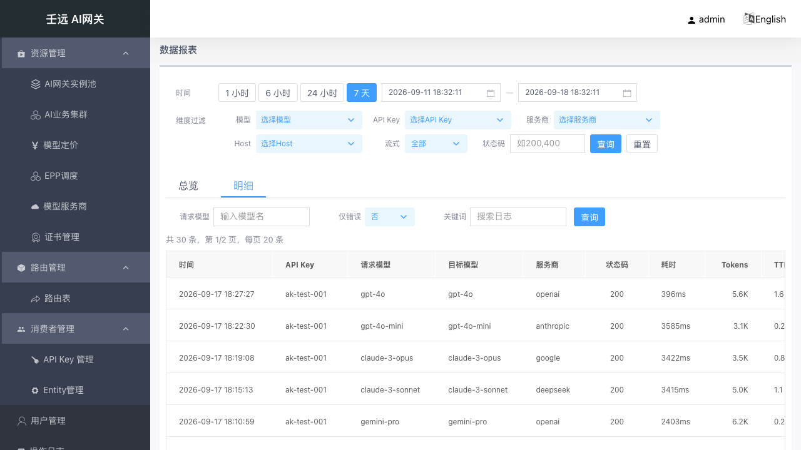
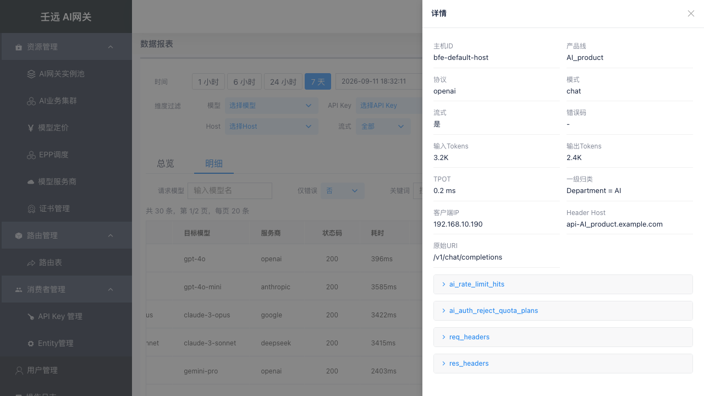

12 数据报表
数据报表提供网关运营数据的可视化查询与分析，包括总览指标卡、时序折线图、维度排行、占比分布与日志明细。查询后端由部署配置决定（MySQL 轻量形态，或 Doris / ClickHouse / StarRocks 标准形态），同一套界面多种后端结构一致。
入口：侧栏顶级菜单「数据报表」（路径 /report，路由名 report.list），菜单下无子项。
页面性质：本模块为纯只读查询页，无写操作与编辑模式 —— 页面上没有新增 / 编辑 / 删除 / 提交等任何写入口，也不存在「视图 / 编辑」双模式切换；页面只调用 5 个只读查询接口，不产生配置变更，因此也不写操作日志。
12.1 页面结构
页面分为全局过滤栏和页签区域两部分：
| 区域 | 内容 | 说明 |
|---|---|---|
| 全局过滤栏 | 两行分区：时间（快捷按钮 + 起止时间 + 「最新」）／维度过滤（6 个通用过滤项 + 行尾「拆分维度」+ 「查询」「重置」） | 过滤条件在页签之间共享，切换页签后保持 |
| 页签区域 | 总览 + 明细（2 个页签） | 默认激活「总览」；页签以隐藏（visibility）方式常驻，切回时重新取数 |
- 进入页面即按默认窗口（近 1 小时）加载「总览」页签；「明细」页签在首次切换过去时才发起查询。
- 过滤栏的维度下拉选项不是静态字典，而是用当前时间窗口调排行接口（
model/apikey/provider/host，各取前 50 名）动态填充，窗口内无数据的取值不会出现在下拉里。 - 行尾的「拆分维度」不是查询过滤项，而是总览时序图的展示开关（见 12.2 全局过滤栏与 12.4 总览页签：图表）。
- 总览与明细的取数都基于同一份全局过滤参数（见 12.2 全局过滤栏），明细另有各自工具栏过滤项（见 12.6 明细页签：工具栏过滤）。

12.2 全局过滤栏
时间区
| 参数 | 类型 | 默认值 | 说明 |
|---|---|---|---|
| 快捷时间 | 按钮组（单选高亮） | 「1 小时」 | 4 个按钮：1 小时 / 6 小时 / 24 小时 / 7 天（即 1 / 6 / 24 / 168 小时）。点击后把结束时间置为当前时刻、起始时间置为「当前时刻 − 跨度」，并立即查询 |
start | 时间选择器（yyyy-MM-dd HH:mm:ss，上送秒级时间戳） | 当前时刻 − 1 小时 | 界面标签「开始时间」；选择器按天禁用晚于结束时间、或早于「结束时间 − 7 天」的日期 |
end | 时间选择器（同上） | 当前时刻 | 界面标签「结束时间」；按天禁用早于开始时间、或晚于「开始时间 + 7 天」的日期 |
| 「最新」 | 按钮 | — | 保持当前跨度不变，把窗口整体平移到当前时刻后重新查询 |
手动改动起止时间后，4 个快捷按钮取消高亮（避免误读为仍处于某个快捷窗口）。
维度区
维度区共 7 个控件：6 个通用过滤项（models / apikey_ids / providers / hosts / stream / status_codes，即接口文档 §1.1 的通用查询参数）+ 行尾的「拆分维度」。
| 参数 | 类型 | 默认值 | 说明 |
|---|---|---|---|
models | 多选下拉（可搜索） | 空（全部） | 界面标签「模型」，对应路由后的目标模型；选中值以 , 拼接上送，不选则不携带该参数 |
apikey_ids | 多选下拉（可搜索） | 空（全部） | 界面标签「API Key」；取值来自排行维度 apikey |
providers | 多选下拉（可搜索） | 空（全部） | 界面标签「服务商」，对应上游提供商；取值来自排行维度 provider |
hosts | 多选下拉（可搜索） | 空（全部） | 界面标签「Host」，对应主机标识；取值来自排行维度 host |
stream | 单选下拉（可清空） | 空（全部） | 界面标签「流式」，选项「是」= 1、「否」= 0（字符串取值，非布尔）；清空后不携带 |
status_codes | 文本输入 | 空 | 界面标签「状态码」，逗号分隔多个，如 200,500；占位文案「如200,400」 |
拆分维度（tsSplit） | 单选下拉 | 「不分维度」（''） | 界面标签「拆分维度」，位于状态码之后、查询按钮之前；4 个选项：不分维度 / 缓存状态（ai_cache_status）/ 镜像命中（mirror_hit）/ 意图答案（ai_intent_answer）。不是查询过滤参数，不并入任何请求的通用过滤项，只决定总览 QPS / Token / 延迟三张时序图是否按维度桶拆成多条序列（见 12.4 总览页签：图表） |
- 7 个控件行为一致：选中后都需点击「查询」才生效，仅切换控件本身不会重新取数。
- 顶部过滤栏没有「缓存状态 / 镜像命中 / 意图答案」过滤项（2026-10-14 变更已从总览过滤栏移除这三个未接线的选择器）：这三个维度不是总览 / 时序的通用过滤参数，无法在总览按它们筛选。它们在本页的作用是图表下钻维度（排行图、占比 / 分布饼图的下拉项，以及时序图的「拆分维度」）；若要按它们过滤明细，请用明细工具栏的同名项（见 12.6 明细页签：工具栏过滤）。
按钮与本地校验
| 按钮 | 行为 |
|---|---|
| 查询 | 先校验时间范围，再按当前页签重新取数（总览刷新指标卡与图表，并把当前「拆分维度」一并应用到三张时序图；明细刷新表格）。顶部「查询」不会把明细页码重置为第 1 页 |
| 重置 | 清空全部 6 项通用过滤项（4 个多选下拉置空，stream / status_codes 清空）并把「拆分维度」复位为「不分维度」，随即重新查询；不改变时间范围与快捷按钮高亮（重置不动查询窗口，避免同一按钮两次结果不一致） |
| 场景 | 前端行为 | 提示文案 |
|---|---|---|
起止时间缺失或顺序错误（end ≤ start） | 拦截，不发起请求 | 查询时间范围不合法，请重新选择 |
| 跨度超过 7 天 | 拦截，不发起请求 | 查询时间跨度不能超过 7 天 |
| 跨度恰好等于 7 天 | 放行（上限含边界） | — |
12.3 总览页签：指标卡
总览顶部是 8 张指标卡（4 列 × 2 行网格，灰底圆角；错误总量卡数值为红色）：
| 指标卡 | 接口字段 | 口径 | 单位 / 格式 |
|---|---|---|---|
| 请求总量 | request_total | 窗口内请求数合计 | 个；fmtNum（≥ 1000 → 1.2K，≥ 1000000 → 1.2M，其余原样，空值 → -） |
| 错误总量 | error_total | 窗口内错误数合计（红色主值） | 个；fmtNum；副行「错误率: {error_rate}」为百分比 1 位小数 |
| Token用量 | total_tokens | 窗口内 Token 合计 | 个；fmtNum；副行「输入 {input_tokens} / 输出 {output_tokens}」 |
| 平均延迟 | latency_avg_ms | 窗口内平均请求耗时 | 毫秒；{值} ms（1 位小数） |
| 费用 | cost[] | 按币种分组的成本金额（服务端已把 1e-8 定点值换算为金额） | 主值 = 第一个币种的金额（fmtNum）+ 币种小字；其余币种逐行以「币种: 金额」列示；无成本数据时主值 - |
| 缓存命中率 | cache.hit_rate | hit / (hit + miss)，豁免（skip）不计入分母；分母为 0 时返回 0 | 百分比 1 位小数；副行 1「命中: {hit} | 未命中: {miss} | 豁免: {skip}」；副行 2「读 Token: {read_tokens} | 写 Token: {write_tokens}」（读写 Token 为窗口合计，未做 ÷1e8 换算，与网关日志计量口径一致） |
| 镜像命中 | mirror.hit_count | 窗口内被流量镜像的请求数 | 个；fmtNum；口径与规则见 16 章 |
| 意图分类 | intent.classified_count | 窗口内路由实际消费的意图分类数（不是全部已配置问题的分类量） | 个；fmtNum；副行「未知: {unknown_count}（{unknown_rate}）」，unknown_rate = unknown / (classified + unknown)，分母为 0 时返回 0；口径见 17 章 |
- 缓存 / 镜像 / 意图三组计数的数据源与明细表一致（条件统计），因此在数据链路刚上线、字段尚未积累时，卡片可能为 0 或
-（见 12.8 时间窗口、数据来源与口径 的「数据可得性」）。 - 总览不展示 P50 / P90 / P99 延迟，也不展示限流命中数与被拒绝配额计划数：分位数只有标准形态后端返回，界面固定只取平均值与最大值，不随后端变化。
12.4 总览页签：图表
图表区为 2 列网格（普通图卡高 280px，.tall 图卡高 320px），共 7 张 echarts 图表，自上而下、从左到右排列：
| 图表标题 | 图形 | 维度 / 指标 | 数据来源（请求） | 说明 |
|---|---|---|---|---|
| QPS 时序 | 折线（整行通栏，高 320px） | 指标 QPS（req/s） | /report/timeseries?metric=qps | 默认单序列；「拆分维度」选中时带 dimension 返回多序列 |
| Token 时间序列 | 折线 | 输入 / 输出 / 总量（tokens/s） | metric=tokens | 默认三条序列取自同一点的 input / output / total |
| 延迟 时间序列 | 折线 | 平均 / 最大（ms） | metric=latency | 仅 avg / max 两条序列；分位数不在总览展示 |
| 排行 | 横向柱状（高 320px） | 标题旁维度下拉（默认模型），指标请求数 | /report/rankings?dimension=<下拉值>&limit=10 | 取前 10 条，类目轴倒序（最大值在最上方） |
| 占比 | 饼图（环图） | 标题旁维度下拉（默认协议），指标请求数 | /report/distribution?dimension=<下拉值> | 占比 = 该维度值请求数 / 窗口请求总数 |
| 分布 | 饼图（环图） | 标题旁维度下拉（默认状态码），指标请求数 | /report/distribution?dimension=<下拉值> | 同上；空值维度归一为 unknown 桶 |
| 缓存 Token 时序 | 折线 | cache_read / cache_write（tokens） | metric=cache_tokens | 双序列按 kind 拆分，缺失点以占位显示；不参与拆分维度 |

维度下拉（排行 / 占比 / 分布）
三张图的图卡标题旁各有一个维度下拉，位于标题右侧（标题本身不再写死维度，因此从「模型 Top10 排行 / 服务商分布 / 状态码分布」简化为「排行 / 占比 / 分布」）：
| 图表 | 下拉选项数 | 选项（i18n 文案） | 默认 |
|---|---|---|---|
| 排行 | 10 项 | 模型 / 服务商 / API Key / Host / 状态码 / 协议 / 模式 / 缓存状态 / 镜像命中 / 意图答案 | 模型（model） |
| 占比 | 7 项 | 协议 / 状态码 / 模式 / 流式 / 缓存状态 / 镜像命中 / 意图答案 | 协议（protocol） |
| 分布 | 7 项 | 与占比相同的 7 项，只是默认选中项不同 | 状态码（status） |
两个饼图的下拉在展开时会把当前选中的维度排在下拉首位（其余按固定顺序排列），所以同一张图的选项顺序会随选中值变化，选项集合不变。
- 切换即时生效：改动维度下拉会立刻按新维度重新请求并重渲染该图（排行取
rankings?dimension=<值>&limit=10；两个饼图取distribution?dimension=<值>），不需要点「查询」——这是它与过滤栏各项（含「拆分维度」）在生效时机上的差别。过滤栏「查询」只按当前下拉值一并重取，不会改变下拉选中值。 - 三张图的维度相互独立：各自单独取数、单独渲染，切换其中一张不影响另外两张，也不影响指标卡与其它图表。
- 两个饼图不含服务商 / 模型 / API Key / Host：
distribution接口的dimension枚举只有 7 个取值（见 12.9 权限、异常与提示），这四项仅在排行下拉中可选。 - 维度桶名的展示做了归一：镜像命中的
"1"/"0"显示为「命中」/「未命中」；空值显示为「未知」；其它维度按接口返回值原样显示——例如分布选「流式」时扇区名为0/1（不做「是 / 否」文案映射），分布的空值桶由接口返回字面量unknown，界面按原样展示。 - 默认态下三张图与变更前一致：排行按模型前 10 名、占比按协议、分布按状态码。
- 下拉列表最高约 200px、超出时可滚动（一次约可见 6 项），因此截图展示的是列表末尾部分。


拆分维度（仅作用于 QPS / Token / 延迟）
过滤栏行尾的「拆分维度」控制 QPS / Token / 延迟三张时序图是否按维度桶拆成多条序列：
| 拆分维度 | 接口行为 | 图例（序列名） |
|---|---|---|
| 不分维度（默认） | 三张图各请求一次，不带 dimension，按时间聚合单序列 | QPS 单条「QPS」；Token「输入 / 输出 / 总量」；延迟「平均 / 最大」 |
| 缓存状态 / 镜像命中 / 意图答案 | 三张图各请求一次并带 dimension=<维度>，响应按 (时间桶, 维度值) 分组，每个点用 name 区分序列 | QPS 为桶名；Token 为「桶名 字段名」（3 条/桶）；延迟为「桶名 字段名」（2 条/桶） |
- QPS：每个维度桶一条序列（拆
value），图例为桶名，如hit/miss/skip。 - Token：每个维度桶三条序列（拆
input/output/total），图例为「桶名 字段名」，如hit 输入/hit 输出/hit 总量。 - 延迟：每个维度桶两条序列（拆
avg/max），图例如hit 平均/hit 最大；接口带dimension时不返回分位数（p50/p90/p99），所以拆分态下延迟图只会有平均与最大值，不会出现分位数序列。 - 桶名归一：
mirror_hit的"1"/"0"分别显示为「命中」/「未命中」；空值桶（name为空串）显示为「未知」。 - 生效时机：与过滤栏其它控件一致——选择后需点击「查询」才生效（只切换下拉不会发起请求）；「重置」会把它清空回「不分维度」并重新查询。
- 作用范围：只影响这三张时序图的展示（拆序列），不是查询过滤条件——不会筛掉任何数据，8 张指标卡、排行 / 占比 / 分布三张图、明细表格都不受它影响。
- 缓存 Token 时序不参与：该图固定按
cache_read/cache_write两条kind序列展示，请求不带dimension，拆分维度对它无效。

| 交互 / 行为 | 说明 |
|---|---|
| 悬停提示 | 折线与柱状图为坐标轴触发；饼图为扇区触发，格式「名称: 值 (百分比)」 |
| 图例 | 折线图图例在底部、饼图图例在右侧竖排；点击图例可显隐对应序列（echarts 默认交互） |
| 缩放 | 图表内不提供缩放 / 框选控件（未配置缩放组件）；仅随浏览器窗口尺寸变化自适应重绘 |
| 数据刷新 | 重新查询后按新数据整份覆盖渲染，不叠加旧序列 |
| 页签切换 | 图表实例不销毁重建（页签为隐藏常驻）；切回「总览」时重新取数并按新数据覆盖渲染 |
| 组件销毁 | 离开本页时移除窗口尺寸监听并释放 echarts 实例 |
接口还支持
metric=ttft/tpot/cost，但总览页只固定使用qps/tokens/latency/cache_tokens四个指标，页面上没有「切换指标」控件；维度的下钻入口只有图表标题旁的维度下拉与过滤栏行尾的「拆分维度」，两者互不影响、互不联动。
12.5 明细页签：表格列
明细页签以服务端分页表格展示日志，固定 15 列，顺序不可调整：
| 列名 | 对应字段 | 宽度 | 展示格式 | 说明 |
|---|---|---|---|---|
| 时间 | log_time | 170 | yyyy-MM-dd HH:mm:ss | 日志产生时间；空值或非法时间显示 - |
| API Key | ai_apikey_id | 120 | 原值 | 未认证请求为空，显示 - |
| 请求模型 | ai_requested_model | 140 | 原值 | 客户端请求的模型名 |
| 目标模型 | ai_target_model | 140 | 原值 | 实际路由到的模型名 |
| 服务商 | ai_provider | 100 | 原值 | 上游提供商 |
| 状态码 | res_status_code | 100（居中） | 原值 | 响应状态码 |
| 耗时 | all_time | 90 | {值}ms | 请求总耗时 |
| Tokens | ai_total_tokens | 90（右对齐） | fmtNum | Token 合计 |
| TTFT | ai_ttft_us | 90 | fmtUs（μs → ms，1 位小数） | 首 Token 延迟；非流式为 0，显示 0.0 ms |
| 费用 | ai_cost_value | 100 | {金额} {币种} | 数值原样输出，不做 K / M 缩写（与总览费用卡不同） |
| 缓存 | ai_cache_status | 80 | 原值 hit / miss / skip | 空串（未启用缓存）显示 - |
| 镜像 | mirror_hit | 110 | 「命中」/ - | 命中且镜像集群非空时显示「命中（集群名）」 |
| 意图答案 | ai_intent_answer | 120 | 原值（含 unknown） | 意图未求值为空串，显示 - |
| 错误 | err_msg | 最小 150 | 红色文本，超过 20 字符截断加 … | 无错误显示 - |
| 操作 | — | 80 | 「详情」按钮 | 打开右侧详情抽屉（见 12.7 明细详情抽屉） |
- 排序：行序固定为接口返回顺序（服务端按日志时间倒序），前端不重排；不支持点击列头排序（列未声明可排序）。
- 行内搜索：明细表格上方没有按列搜索行；检索一律通过工具栏过滤项完成。
- 空值：空值 / 空串统一显示占位
-，不出现空白单元格。 - 信息行：表格上方显示「共 {total} 条，第 {page}/{pages} 页，每页 {size} 条」，仅在总数大于 0 时出现。
- 分页：服务端分页，默认每页 20 条，可在页码控件切换 20 / 30 / 40 / 50 条（接口每页上限为 100 条，界面不提供该档位）；翻页会带着当前全部过滤条件重新请求，过滤条件不丢失。

12.6 明细页签：工具栏过滤
明细页签在全局过滤栏之外，另有一行工具栏过滤项，只对明细表格生效（不影响总览）：
| 参数 | 类型 | 默认值 | 说明 |
|---|---|---|---|
requested_models | 文本输入 | 空 | 界面标签「请求模型」，占位「输入模型名」；过滤的是请求模型，与顶部过滤栏「模型」（目标模型）不是同一字段 |
err_only | 单选下拉 | 「否」 | 界面标签「仅错误」，选项「否」/「是」；选「是」时以布尔真值上送（只看错误码非空的记录） |
keyword | 文本输入 | 空 | 界面标签「关键词」，对错误详情做模糊匹配；长度上限 128 字符，超过时点击「查询」直接提示「关键词长度不能超过 128 字符」并中断，不发起请求 |
cache_status | 单选下拉（可清空） | 空（全部） | 界面标签「缓存状态」，hit / miss / skip 精确匹配 |
mirror_hit | 单选下拉（可清空） | 空（全部） | 界面标签「镜像命中」，选「命中」上送布尔真值、「未命中」上送布尔假值；清空后不携带 |
intent_question | 文本输入 | 空 | 界面标签「意图问题」，精确匹配意图问题名；占位文案写的是「模糊匹配」，实际语义为精确匹配，以接口为准 |
intent_answer | 文本输入 | 空 | 界面标签「意图答案」，精确匹配意图答案，可填 unknown 筛出未达门限的答案 |
intent_source | 单选下拉（可清空） | 空（全部） | 界面标签「意图来源」，选项 explicit_header / classifier / cache |
page / page_size | 分页控件 | 1 / 20 | 服务端分页参数；工具栏「查询」会把页码重置为 1 |
- 工具栏各项之间是与关系，并与顶部过滤栏的条件叠加（一次请求同时携带全局参数与工具栏参数）。
- 工具栏改动后必须点工具栏的「查询」才生效（该按钮同时承担关键词长度校验与页码重置）。
- 工具栏取值与页码在切到「总览」再切回后保留（页签常驻挂载，不重建组件）。
12.7 明细详情抽屉
点击行操作「详情」，从右侧滑出详情抽屉（宽度 40%，标题「详情」，可点右上角关闭按钮关闭；点击遮罩不会关闭）。抽屉内是双列网格的纯文案展示，没有任何输入控件、没有必填标记：
| 字段 | 必填 | 默认值 | 校验规则 | 说明 |
|---|---|---|---|---|
主机 ID（hostid） | —（只读展示） | - | 空值占位 - | 主机标识 |
产品线（product） | —（只读展示） | - | 空值占位 - | 产品标识 |
协议（ai_protocol） | —（只读展示） | - | 空值占位 - | AI 协议 |
模式（ai_mode） | —（只读展示） | - | 空值占位 - | AI 模式（如 chat） |
流式（ai_stream） | —（只读展示） | 否 | 值为 1 显示「是」，否则显示「否」 | 是否流式 |
错误码（err_code） | —（只读展示） | - | 空值占位 - | 无错误时为空 |
输入Tokens（ai_input_tokens） | —（只读展示） | - | fmtNum 格式化 | 输入 Token 数 |
输出Tokens（ai_output_tokens） | —（只读展示） | - | fmtNum 格式化 | 输出 Token 数 |
TPOT（ai_tpot_us） | —（只读展示） | - | fmtUs（μs → ms，1 位小数） | 每 Token 延迟；非流式为 0 |
一级归类（level1Name / level1） | —（只读展示） | - | 形如「标签名 = 标签值」，任一侧为空则显示 - | API Key 一级标签的名称与取值 |
客户端IP（client_ip） | —（只读展示） | - | 空值占位 - | 客户端来源 IP |
Header Host（header_host） | —（只读展示） | - | 空值占位 - | 请求 Host |
原始URI（origin_uri） | —（只读展示） | - | 空值占位 - | 原始请求路径 |
缓存状态（ai_cache_status） | —（只读展示） | - | 空值与空串均占位 - | hit / miss / skip；空串表示未启用缓存 |
镜像命中（mirror_hit / mirror_cluster） | —（只读展示） | 否 | 命中显示「是」、未命中显示「否」；命中且集群非空时追加「（集群名）」 | 是否被流量镜像 |
意图问题（ai_intent_question） | —（只读展示） | - | 空值与空串均占位 - | 路由实际消费的问题名 |
意图答案（ai_intent_answer） | —（只读展示） | - | 空值与空串均占位 - | 分类答案（含 unknown） |
意图置信度（ai_intent_confidence） | —（只读展示） | - | 仅在值为 null 时占位 -（值为 0 时原样显示 0） | 门控后的置信度 |
意图来源（ai_intent_source） | —（只读展示） | - | 空值占位 - | explicit_header / classifier / cache |
意图延迟（ai_intent_latency_us） | —（只读展示） | - | fmtUs（μs → ms，1 位小数） | 决策服务耗时；来源为缓存或显式头时为空 |
意图缓存命中（ai_intent_cache_hit） | —（只读展示） | - | null 显示 -，true / false 显示「是」/「否」 | 意图缓存是否命中 |
意图问题版本（ai_intent_questions_version） | —（只读展示） | - | 空值占位 - | 问题集配置版本 |
本页为只读展示，字段没有「必填 / 默认值」概念；上表第三、四列给的是界面展示规则（空值占位与格式化口径），用于逐字段核对界面与接口数据。
抽屉底部是 4 个 JSON 字段折叠区，按固定顺序渲染，默认折叠，点字段名展开 / 收起，多个字段可各自独立展开：
| 字段 | 内容 | 展示方式 |
|---|---|---|
ai_rate_limit_hits | 命中的限流策略列表 JSON | 字符串原样输出；非字符串按 2 空格缩进格式化；内容区最高 240px、可滚动 |
ai_auth_reject_quota_plans | 被拒绝的配额计划 JSON | 同上 |
req_headers | 请求头列表 JSON | 同上 |
res_headers | 响应头列表 JSON | 同上 |
- 仅当该字段非空（
null之外）时才渲染对应折叠块；为空的行不出现，避免空标题占位。 - 抽屉不展示日志 ID、请求模型、目标模型、服务商、状态码、耗时、费用、TTFT、二级及以下标签（
level2~level5）等字段；这些只在表格列或接口返回中出现。

12.8 时间窗口、数据来源与口径
窗口与限制
| 项目 | 值 | 说明 |
|---|---|---|
| 可查询窗口上限 | 7 天（168 小时） | 前端与后端同一上限；恰好 7 天合法，超过 7 天前端拦截（提示「查询时间跨度不能超过 7 天」）；绕过前端直接调接口超限返回参数校验错误（HTTP 422） |
| 默认窗口 | 近 1 小时 | 进入页面时的默认值，快捷按钮默认高亮「1 小时」 |
| 时序采样间隔 | 服务端按窗口自动计算：≤ 6 小时 → 60 秒；≤ 3 天 → 300 秒；≤ 7 天 → 1800 秒 | 客户端不传该参数，界面上也无法调整 |
| 明细数据保留 | 默认 7 天（部署侧保留天数配置） | 轻量形态按天分区删除，超出保留期的历史数据查不到，与窗口上限一致 |
后端形态与数据来源
查询后端由部署配置 [Report].Backend 决定，四种形态共用同一套界面与接口：
| 形态 | 后端取值 | 数据链路 | 界面差异 |
|---|---|---|---|
| 轻量形态 | mysql | 网关日志 → MySQL 明细表 + 分钟聚合表（本地聚合任务维护） | 无延迟分位数字段（界面不展示相关指标，不受影响） |
| 标准形态 | doris | 网关日志 → Kafka → Doris 明细表 + 分钟聚合表 | 完整 |
| 标准形态 | clickhouse | 网关日志 → Kafka → ClickHouse（分钟聚合由物化视图维护） | 完整 |
| 标准形态 | starrocks | 网关日志 → Kafka → StarRocks（分钟聚合由异步物化视图维护） | 完整 |
- 数据来源分两级：总览 / 时序 / 排行 / 分布读分钟聚合表（合计与逐分钟序列）；明细表格读明细表。总览中的「请求总量」「缓存命中 / 未命中 / 豁免」「镜像命中」「意图分类」等计数走明细表条件统计，与明细页签是同一份数据，因此两者对同一窗口的计数应当一致。
- 分位数差异：P50 / P90 / P99 只有 Doris / StarRocks / ClickHouse 返回，三种引擎近似算法不同，数值不承诺跨引擎相等；MySQL 形态不返回该字段。界面固定只展示平均与最大值，因此总览卡展示不随后端变化。
- 前置条件：标准形态需部署侧先行完成表结构与维度列升级，否则缓存 / 镜像 / 意图等新维度可能取不到数据；界面不会为此单独提示（此前的后端门控提示已下线）。
成本与多币种口径
- 成本金额由服务端统一把库内的 1e-8 定点值换算为金额后返回（元 / 美元），前端直接展示、不再换算。
- 同一窗口内可能同时存在多种币种：总览「费用」卡主值取接口返回数组的第一个币种（金额 + 币种小字），其余币种逐行以「币种: 金额」列示；无成本数据（数组为空或字段缺失）时主值显示
-，不渲染副行。 - 币种顺序由服务端返回决定，界面不做排序、也不指定主币种；同一环境的顺序应保持稳定，但不能假定主值一定是某个特定币种。
- 明细「费用」列按每行的金额与币种原样展示，不做金额缩写；缓存卡的读写 Token 为窗口合计，未做 ÷1e8 换算，与网关日志计量口径一致。
数据可得性
- 缓存、镜像、意图三组字段自各链路（日志扩列、报表 DDL、聚合任务）上线后逐步积累，上线前的历史数据对应字段为空串 / 0，界面上显示为
-或按 0 计数。 - 分钟聚合表不回填历史；新维度从聚合表维度列上线后的分钟窗口起才有数据。
- 「意图分类」统计的是路由实际消费的意图（一期每条请求只记录一条），不是全部已配置问题的分类量，因此不会等于已配置问题数乘以请求数。
12.9 权限、异常与提示
| 项目 | 说明 |
|---|---|
| 菜单可见性 | 「数据报表」在侧栏是顶级菜单，对「系统管理员」与「系统管理员（只读）」均可见，菜单下无子项 |
| 接口权限 | 5 个查询接口都要求报表读权限；系统管理员拥有全部权限，只读角色的报表权限为只读（含读全量），因此两个角色看到的报表数据完全一致 |
| 页面写权限 / 双模式 | 本模块为纯只读查询页，无写操作与编辑模式：两个角色的界面没有差异，都不出现「进入编辑模式」「保存」「删除」等入口，页面不调用任何写接口 |
| 本地提示 | 校验类问题以消息条弹出（时间范围不合法 / 超过 7 天 / 关键词超过 128 字符），并在拦截时不发起请求 |
| 加载失败 | 接口非 200 或请求异常时提示「加载失败」；总览页签下若总览接口未成功返回，指标卡与图表区域显示空态 |
| 场景 | 接口表现 | 界面表现 |
|---|---|---|
| 未认证（无有效会话） | HTTP 401 | 全局弹窗展示接口返回的错误信息，确认后清除本地会话并跳转登录页 |
| 已认证但无报表读权限 | HTTP 402（错误信息为 Feature Access Deny） | 全局弹窗展示错误信息，确认后跳转登录页；总览页签保持空态、明细列表为空 |
参数非法（缺起止时间、end ≤ start、窗口超 7 天、关键词超长等） | HTTP 422（参数校验错误） | 正常情况下由前端本地校验先行拦截，不会发出该请求 |
distribution 的 dimension 传了不支持的取值（provider / model / apikey / host） | HTTP 422（invalid dimension） | 界面不会触发：两个饼图的维度下拉只提供接口支持的 7 个取值，不暴露这四项（排行支持它们，见下条） |
| 报表模块未装配（部署未配置报表段） | HTTP 404（路由不存在） | 接口不可用，取数失败并提示「加载失败」 |
| 后端查询失败 | HTTP 500 | 提示「加载失败」，已加载的数据保持在上一次结果 |
- 三个端点的
dimension支持范围不同（决定了界面上各下拉的选项集，也解释了为什么饼图下拉比排行少 3 项）：rankings（排行图 + 过滤栏下拉选项）：支持model/requested_model/provider/apikey/host/status/protocol/mode/ai_cache_status/mirror_hit/ai_intent_answer，共 11 个取值——排行下拉的 10 项即其中的展示子集（不含requested_model）。distribution（占比 / 分布饼图）：只支持status/protocol/mode/stream/ai_cache_status/mirror_hit/ai_intent_answer共 7 个取值；传provider/model/apikey/host返回 HTTP 422。timeseries（时序图）：dimension只支持ai_cache_status/mirror_hit/ai_intent_answer三个新维度，即「拆分维度」下拉的全部可选值。
- 超时行为：单次请求超时阈值为 30 秒；超时或网络中断时没有响应体，页面统一按「加载失败」处理（弹出提示并结束加载态），不会残留骨架屏或加载遮罩。
12.10 加载态与空态
| 场景 | 表现 |
|---|---|
| 总览首次加载（尚未拿到数据） | 指标卡与图表区域显示骨架屏：8 个指标卡骨架 + 5 个图卡骨架（3 个通栏 + 2 个普通），带流动高光动画 |
| 总览已有数据后再次查询 | 直接覆盖更新，不再显示骨架屏 |
| 总览接口未返回数据 | 整页空态：统计图标 + 「暂无数据」 |
| 单个图表无数据 | 仅该图卡内显示「暂无数据」，不影响其它图表 |
| 窗口内指标为 0 | 指标卡正常显示 0（与「无数据」区分）；费用卡因无成本数据仍显示 - |
| 明细查询中 | 表格显示加载遮罩 |
| 明细无数据 | 表格空态；信息行不显示（仅在总数大于 0 时出现） |
12.11 与其它模块的联动
报表本身不产生数据、也不修改任何配置，它是对其它模块运行结果的只读观测面：
| 报表内容 | 数据来源 | 对应章节 |
|---|---|---|
| 缓存命中率卡、缓存 Token 时序、明细「缓存」列与缓存状态过滤 | 网关应答缓存行为（hit / miss；skip 对应「缓存豁免（disabled）」规则） | 15 章 AI缓存规则 |
| 镜像命中卡、镜像命中维度、明细「镜像」列与镜像命中过滤 | 流量镜像规则的命中情况与目标集群 | 16 章 流量镜像规则 |
| 意图分类卡、意图答案相关维度、明细「意图答案」列与意图来源过滤 | 意图配置的问题集与置信度门控（低于门限的答案记为 unknown） | 17 章 意图配置 |
| 费用卡与明细「费用」列 | 模型定价与计费口径 | 06 章 模型定价 |
| 过滤栏的 API Key / 服务商 / 主机 / 模型取值 | 消费者与资源配置模块 | 09 章 API Key、03 章 模型服务商、10 章 路由管理 |
| 报表自身的访问 | 只读查询，不写操作日志 | 11 章 操作日志 |
12.12 注意事项
- 时间窗口上限为 7 天；超过 7 天的范围请在过滤栏分段查询。分段查询时注意：计数类指标可以相加，平均值与占比类指标不能直接相加，需按各自口径重新计算。
- 时序数据的采样间隔由服务端按窗口自动计算，客户端无需传参，也无法调整。
- 成本数据按币种分开展示：总览卡主值取首个币种（金额 + 币种小字），其余币种以副行列示；无成本数据时成本卡显示
-。 - 明细日志按时间倒序排列，确保最新的请求优先展示；前端不做二次排序，翻页与过滤都不会改变行序。
- MySQL 后端无延迟分位数，总览卡中这些指标不展示。如有分位数需求，建议升级到 Doris 后端。
- 过滤栏行尾的「拆分维度」只影响 QPS / Token / 延迟三张时序图的展示（按维度桶拆成多条序列），不是查询过滤条件：它不会筛掉数据，指标卡、排行 / 占比 / 分布三张图与明细表格都不随它变化。
- 两种维度下钻的生效时机不同：图表标题旁的维度下拉（排行 / 占比 / 分布）切换后立即重新取数；过滤栏的各项（含「拆分维度」）都要点「查询」才生效。顶部「缓存状态 / 镜像命中 / 意图答案」过滤项已不存在，按这些维度过滤明细请用明细工具栏的同名项。
- 「重置」只清空 6 项通用过滤项并把「拆分维度」复位为「不分维度」、不重置时间范围；需要回到默认窗口请点快捷按钮「1 小时」。
- 顶部过滤栏的「模型」是目标模型（路由结果），明细工具栏的「请求模型」是客户端原始请求的模型，两者经常不同（如请求
gpt-4而路由到gpt-4o）。 - 明细「关键词」是模糊匹配错误详情；「意图问题」「意图答案」虽然占位提示写着「模糊匹配」，接口实际只做精确匹配。
- 指标卡与图表只统计当前窗口内的数据：停用某项配置不会让历史窗口的数字立刻归零，排查「为什么还有镜像命中 / 意图分类」时先确认窗口范围与数据可得性（见 12.8 时间窗口、数据来源与口径）。